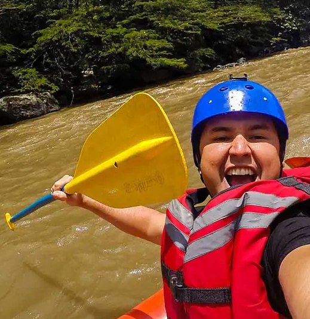
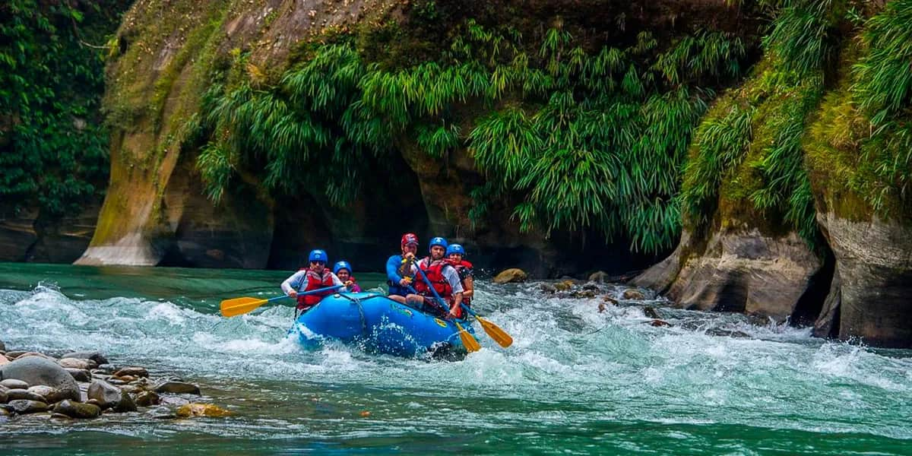
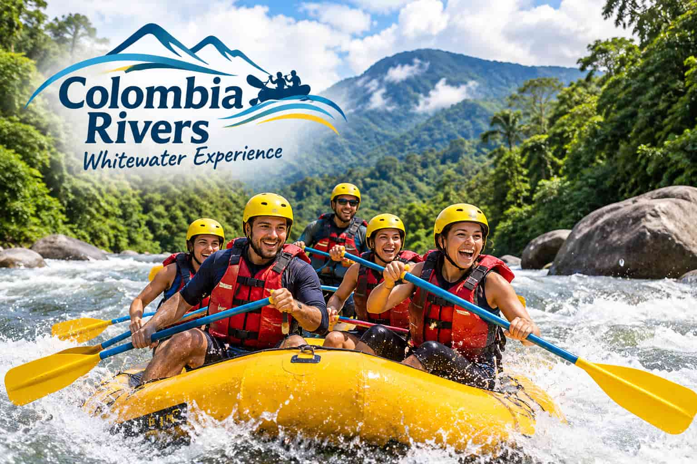
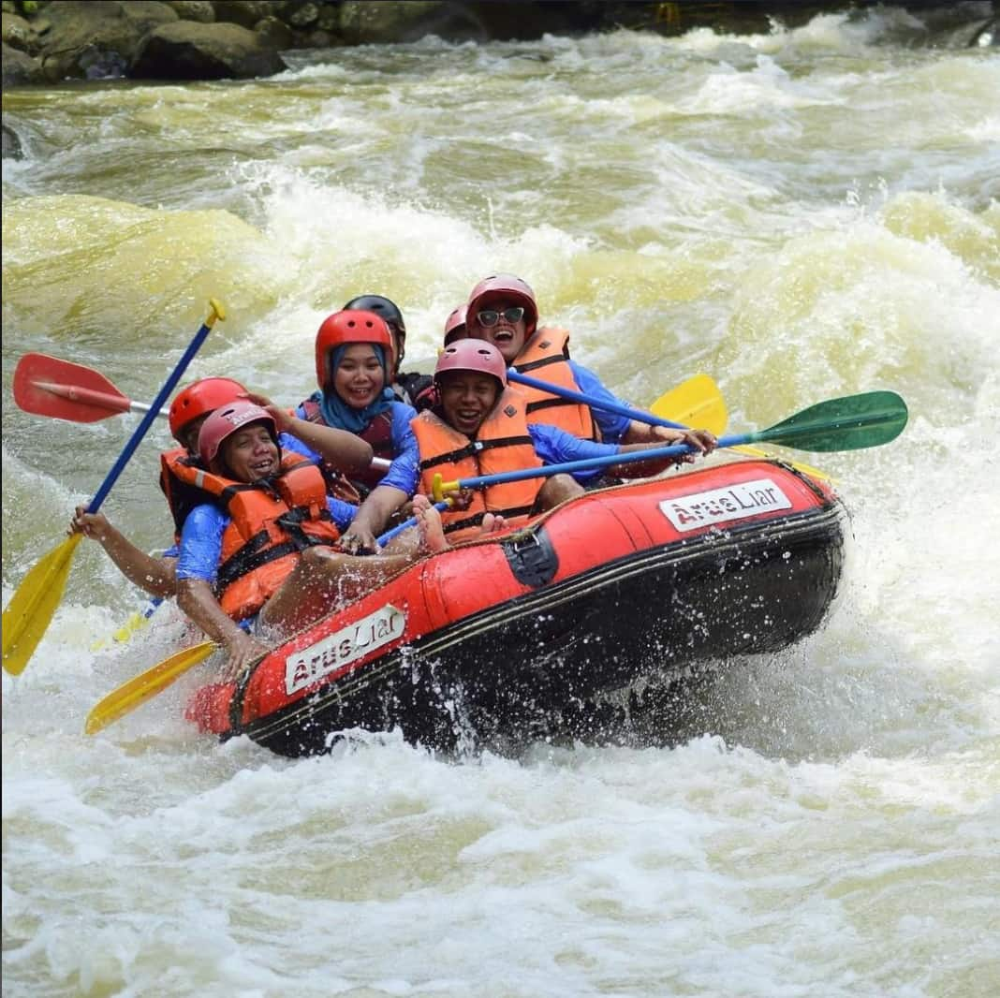
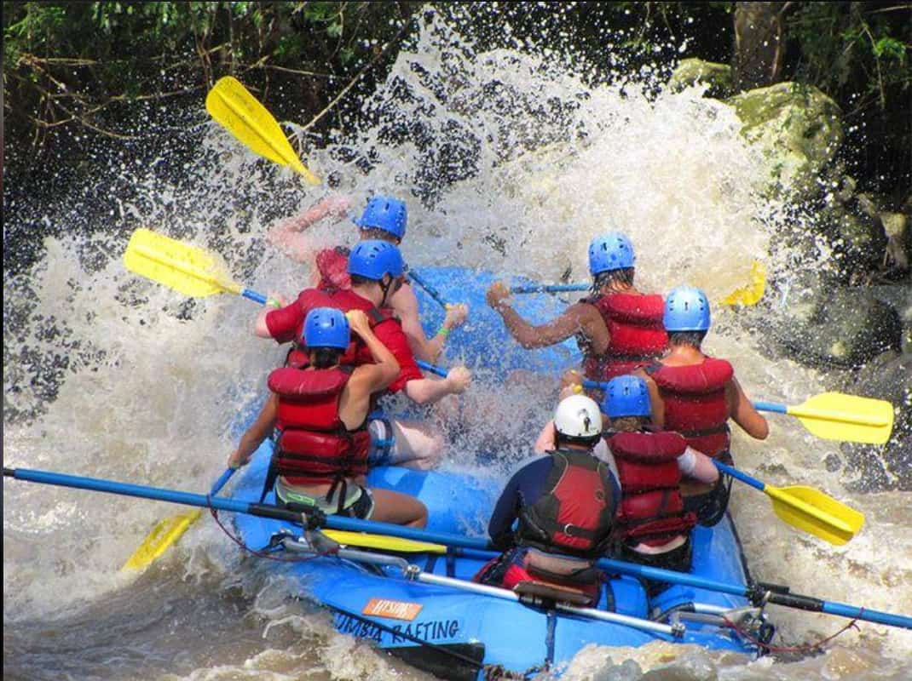
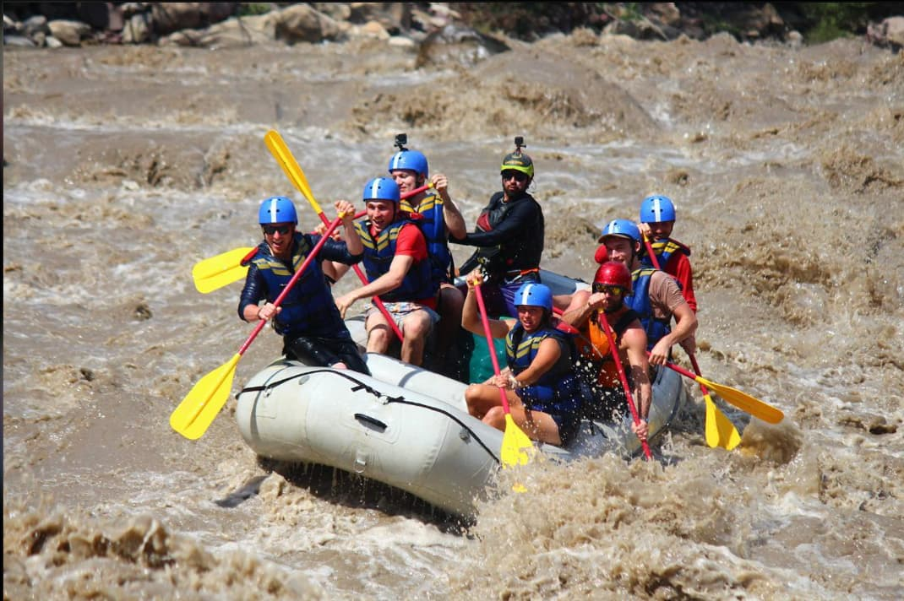
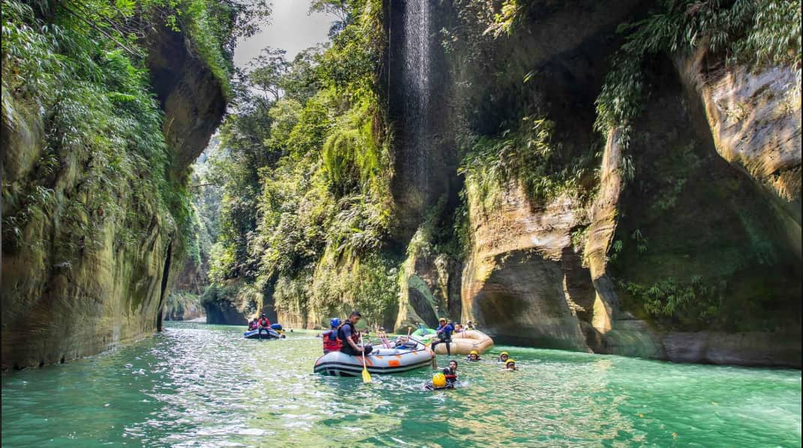
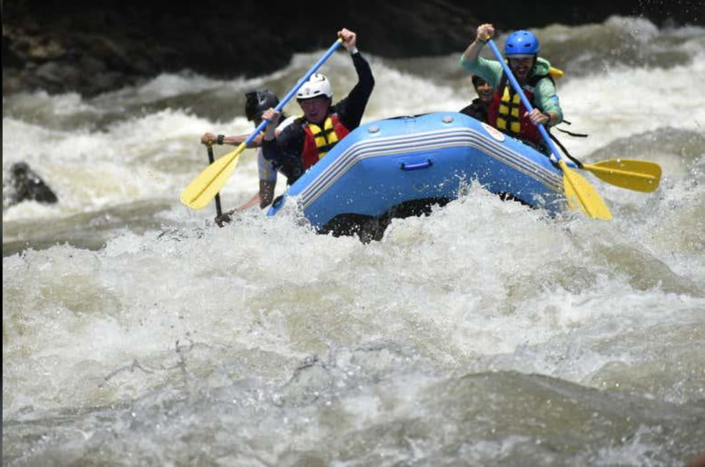

We believe every river has a story and every journey creates a connection. Explore with courage, respect nature, and celebrate Colombia's beauty!
Ride the Rapids. Discover Colombia!


We believe every river has a story and every journey creates a connection. Explore with courage, respect nature, and celebrate Colombia's beauty!
Ride the Rapids. Discover Colombia!
Colombia Rivers was created by a group of passionate adventurers who wanted to share the beauty of Colombia's rivers with the world. Inspired by the country's mountains, tropical forests, and powerful waterways, the company began with a simple dream: to create unique outdoor experiences for people from different parts of the world. Today, Colombia Rivers is dedicated to adventure, environmental awareness, and unforgettable memories.

Our purpose is to connect people with Colombia's extraordinary
rivers through exciting adventures that inspire exploration,
respect for nature, and appreciation for local communities.
Our mission is to provide safe and unforgettable whitewater
experiences while promoting environmental conservation
and responsible tourism.




